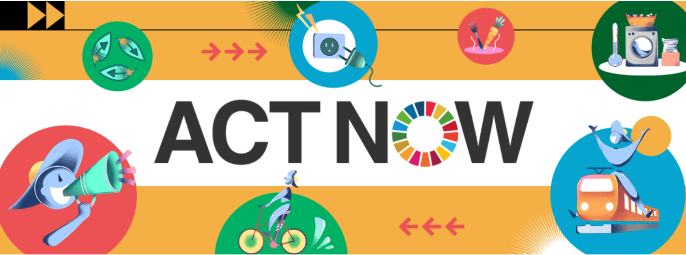
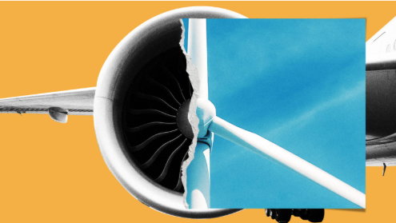
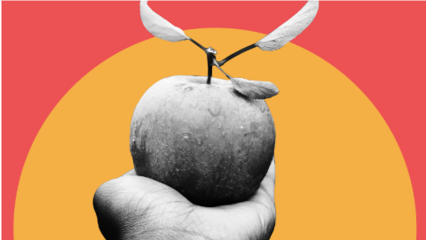
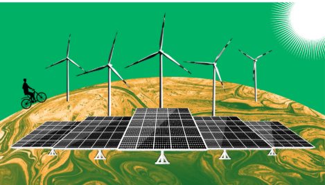

เพื่อรักษาสภาพภูมิอากาศให้ยังคงเอื้อต่อการดำรงชีวิต การปล่อยก๊าซเรือนกระจกสุทธิจะต้องลดลงเป็นศูนย์ภายในปี 2050 แน่นอนว่าภาครัฐและภาคธุรกิจจะต้องดำเนินการอย่างชัดเจน รวดเร็ว และรอบด้าน แต่การเปลี่ยนผ่านสู่โลกคาร์บอนต่ำก็ต้องอาศัยการมีส่วนร่วมของประชาชนด้วย โดยเฉพาะอย่างยิ่งในระบบเศรษฐกิจที่ซับซ้อน ActNow เป็นโครงการรณรงค์ของสหประชาชาติว่าด้วยการแก้ปัญหาสภาพภูมิอากาศและความยั่งยืนในระดับบุคคล เราทุกคน สามารถช่วยลดภาวะโลกร้อน ดูแลโลกของเรา และกระตุ้นให้เกิดการเปลี่ยนแปลงได้ด้วยการทำกิจกรรมที่ส่งผลเสียต่อสิ่งแวดล้อมให้น้อยลง บันทึกสิ่งที่คุณทำเพื่อแก้ปัญหาสภาพอากาศ และร่วมเป็นส่วนหนึ่งของความพยายามระดับโลกผ่าน แอปพลิเคชันนี้


ไฟฟ้าและความร้อนส่วนใหญ่ที่เราใช้ยังคงต้องอาศัยพลังงานจากถ่านหิน น้ำมัน และก๊าซ เครื่องบินและรถยนต์ส่วนใหญ่ก็ยังใช้เชื้อเพลิงฟอสซิล คุณสามารถช่วยลดการปล่อยก๊าซคาร์บอนไดออกไซด์ได้โดยใช้พลังงานที่บ้านให้น้อยลง เปลี่ยนไปใช้พลังงานลมหรือพลังงานแสงอาทิตย์ หลีกเลี่ยงการเดินทางด้วยเที่ยวบินระยะไกล และขับรถให้น้อยลง

การผลิต การแปรรูป การขนส่ง การบริโภค และการกำจัดอาหารล้วนนำไปสู่การปล่อยก๊าซเรือนกระจก คุณสามารถลดผลกระทบต่อสภาพอากาศได้ด้วยการซื้ออาหารในท้องถิ่นและตามฤดูกาล รับประทานอาหารจากพืชให้มากขึ้น ใช้วัตถุดิบอาหารที่คุณมีให้หมด และและทำปุ๋ยหมักจากเศษอาหารที่เหลือ

การดำเนินการอย่างเป็นรูปธรรมจากทุกภาคส่วนของสังคมคือปัจจัยหลักในการเปลี่ยนผ่านอย่างรวดเร็วสู่อนาคตที่มีความยืดหยุ่นต่อสภาพอากาศ จงเปล่งเสียงของคุณ เรียกร้องต่อผู้นำระดับโลก กระตุ้นให้ผู้คนในเมือง ในภูมิภาค และในมหาวิทยาลัยของคุณ ตลอดจนธุรกิจต่าง ๆ ลงมือดำเนินการอย่างเร่งด่วนเพื่อให้การปล่อยมลพิษสุทธิเป็นศูนย์